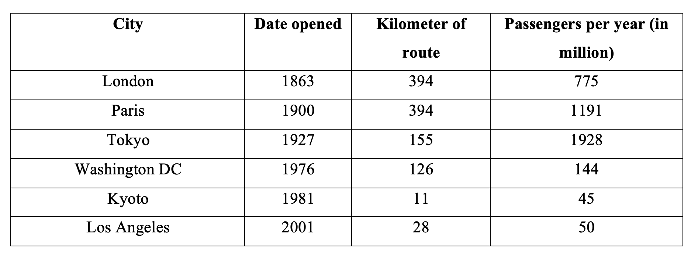

You should spend about 20 minutes on this task.
The table shows data about underground railway system in Six major cities with data opened, kilometers of route and passenger number in million
Summarise the information by selecting and reporting the main features making comparisons where relevant.
Write at least 150 words.
